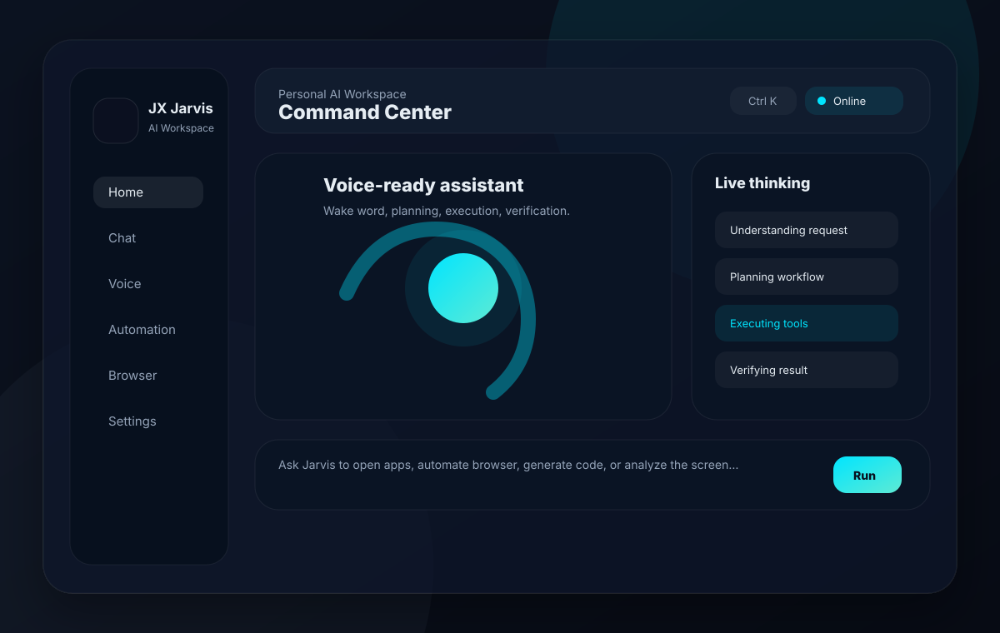

01
Wake Word Activation
Hands-free "Hey Jarvis" and manual voice modes for fast commands.
Autonomous AI Desktop Operating System
An advanced voice-controlled AI workspace capable of desktop automation, browser control, coding assistance, and intelligent workflows.
Created by Jojin John.

Jarvis combines voice activation, AI planning, desktop tools, browser automation, local memory, and permission controls into one desktop operating assistant.
Hands-free "Hey Jarvis" and manual voice modes for fast commands.
Visible Playwright browser control with typing, clicking, scrolling, and DOM awareness.
Creates, analyzes, and runs local code projects inside allowed workspaces.
English and Malayalam voice flows with configurable speech providers.
Groq, OpenAI, Claude, Gemini, OpenRouter, Ollama, and local models.
Local persistent brain storage for conversations, projects, workflows, and preferences.
Record actions, replay workflows, and run multi-step routines.
Understand, plan, execute, retry, verify, and explain progress in real time.
Launch apps, run safe commands, search files, and manage system tasks.
Capture screenshots, analyze UI state, and use visual context for debugging.
Documentation assets are local and deployment-safe. Replace them with live app screenshots any time without changing the layout.


Every major user control has a matching backend API and persistent local state.
Every automation request moves through a predictable pipeline so users can see what Jarvis is doing and interrupt when needed.
Use the commands below for development. Production packaging is handled by Electron Builder.
git clone https://github.com/jojin1709/Jarvis-assistant.git
cd Jarvis-assistant
npm install
npm --prefix frontend install
cd backend
python -m venv .venv
.\.venv\Scripts\python.exe -m pip install -r requirements.txt
cd ..
copy .env.example .env
npm run install:desktop
npm run devWindows 10/11, Node.js 20+, Python 3.11+, microphone access, and Chrome/Edge for visual browser automation.
Add provider keys in `.env` or through Settings -> AI Providers. Never commit secrets.
`npm run install:desktop` adds Start JX JARVIS to the current user's Desktop for one-click launching.
Install Playwright browsers with `python -m playwright install chromium` if Chromium is missing.
Run Ollama locally and pull a model such as `llama3.1` for offline mode.
Configure voice activation, speech recognition, and response output.
See how the visual browser operator navigates real pages.
Understand local persistent memory and backup controls.
Route chat, coding, vision, voice, and automation models.
Protect folders, require confirmations, and use safe mode.
Record, replay, plan, pause, cancel, and verify routines.
Add local automation packs and future skills.
Explore architecture, APIs, and extension points.
Open issues with reproduction steps, keep changes scoped, protect secrets, and test backend and frontend before pull requests.
JX Jarvis is created and maintained as a premium autonomous desktop AI assistant project by Jojin John.
Follow development updates, product improvements, and AI automation work on LinkedIn.